2 Makale
Vücudu hastalığa karşı koruyan sistemdir. Özgül olmayan ve özgül (spesifik) olmak üzere ikiye ayrılır.

Özgül olmayan bağışıklık
7 kart / 7 dak.
Özgül olmayan savunma mekanizmaları fiziksel engeller, fagositler, doğal katil hücreler, interferonlar, iltihaplanmalar ve ateşlenmelerdir.
BAŞLA

Özgül bağışıklık
5 kart / 5 dak.
Hastalık yapıcılara karşı özgül bir tepki koyarak oluşan savunma mekanizmasıdır.
BAŞLA